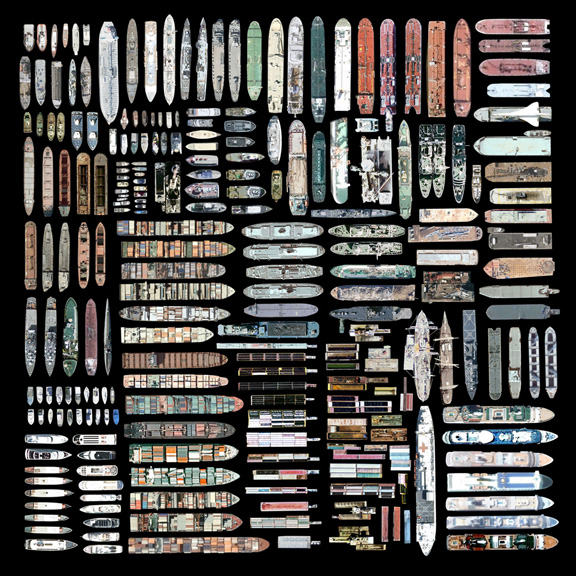
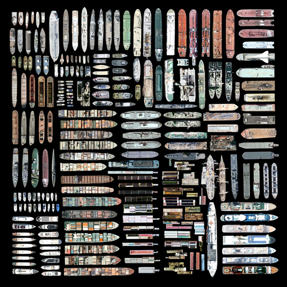

The Satellite Collection
Artist Jenny Odell created a series of digital prints using a collage of cutout imagery from Google Maps. See more of her projects at Jenny’s blog.
Via Kitsune Noir

Artist Jenny Odell created a series of digital prints using a collage of cutout imagery from Google Maps. See more of her projects at Jenny’s blog.
Via Kitsune Noir